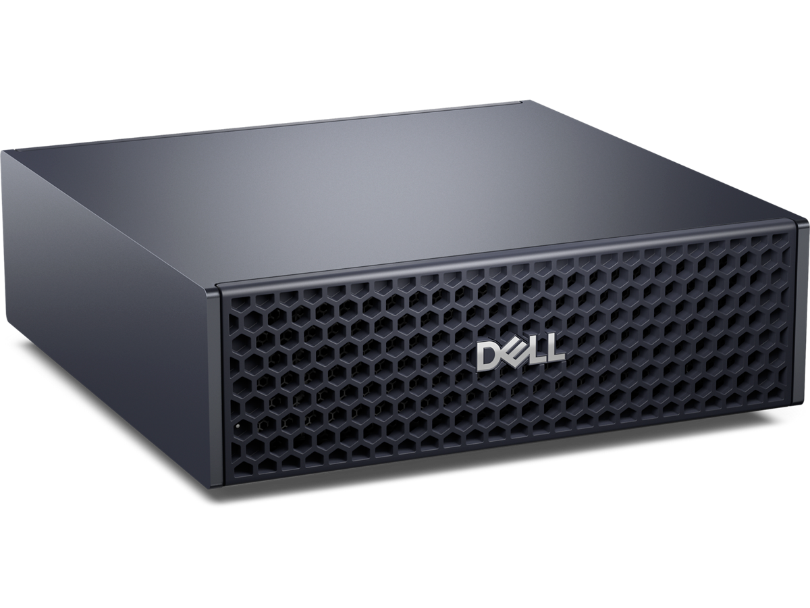
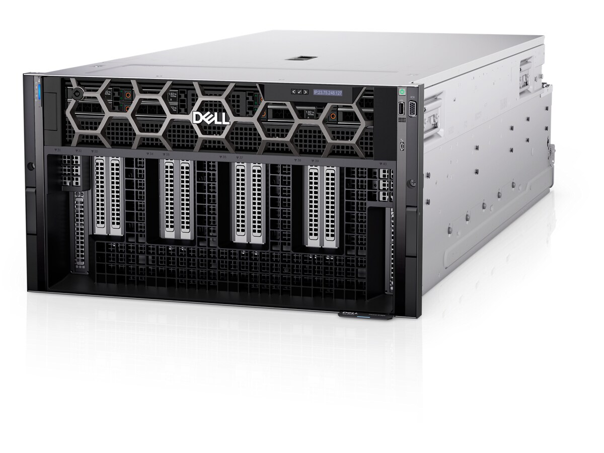
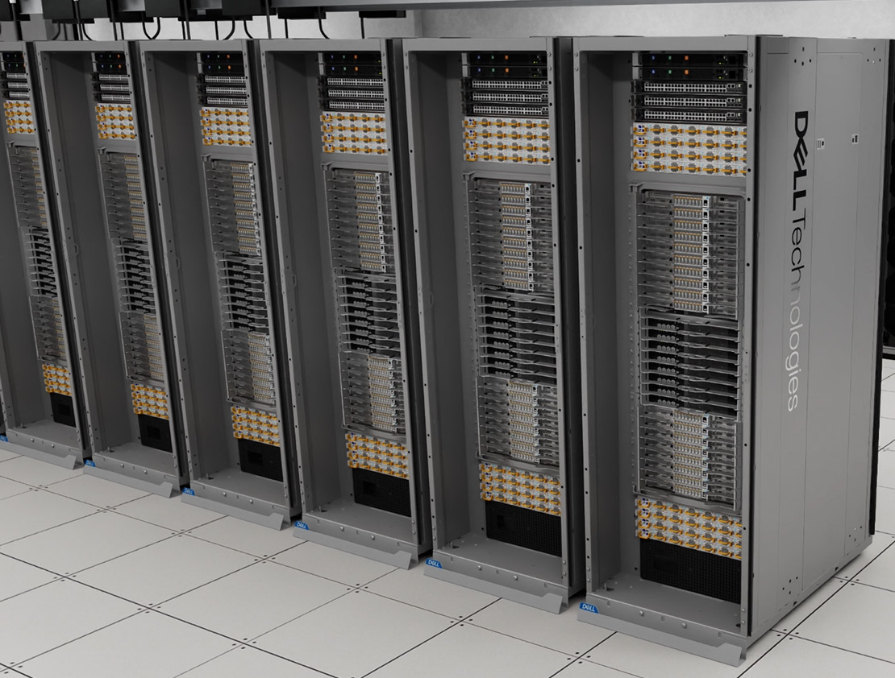
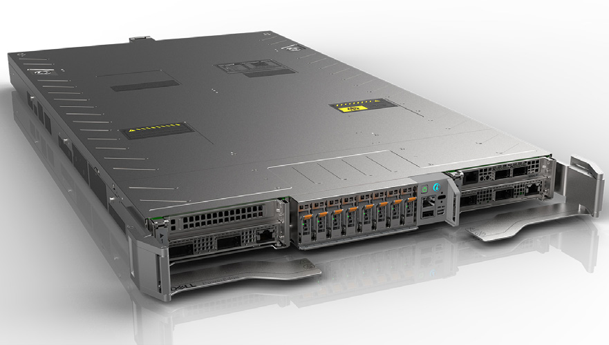

A 240-watt desktop today, an AI factory tomorrow, same software stack. GB10 is the art of the possible: the smallest device that runs the full pipeline. Scale up to a rack-mount node or a full liquid-cooled rack, and the same architecture hosts the largest open-weights frontier models with room for several tenants and several models at once.
今日は240ワットのデスクトップ、明日はAIファクトリー。ソフトウェアスタックは同じです。GB10は「可能性の芸術」、パイプライン全体を回せる最小のデバイスです。ラックマウントノードや液冷の1ラックへスケールすれば、同じアーキテクチャ上で最大規模の公開重みフロンティアモデルを動かせ、複数テナント・複数モデルの同時運用にも余裕が生まれます。
Three tiers of NVIDIA Blackwell-generation hardware. Each one runs essentially the same vLLM + meeting-scribe + auto-sre stack. The GB10 we ship today on a desk is the small end. The HGX B200 / B300 air-cooled node is the rack-mount tier. The GB200 / GB300 NVL72 is one liquid-cooled rack with more compute than most pre-2024 AI startups had in their entire fleet.
NVIDIA Blackwell世代ハードウェアの三段階。それぞれが本質的に同じ vLLM + meeting-scribe + auto-sre スタックで動作します。今日デスク上で出荷している GB10 が小さい端。HGX B200 / B300 空冷ノードがラックマウント段。GB200 / GB300 NVL72 は液冷の1ラックで、2024年以前の多くの AI スタートアップが全社で持っていた以上の計算量を提供します。

A single Grace+Blackwell SoC on a 150 mm desktop board. The unified memory pool is fixed at 128 GB, so we ship a 35B-A3B Mixture-of-Experts translation model that lives inside that envelope. Every part of the pipeline is sized to the device. It is the entry point, and for a small team or one conference room it is plenty.
150 mm のデスクトップ基板上に1つの Grace+Blackwell SoC。ユニファイドメモリのプールは 128 GB 固定です。そのエンベロープに収まる 35B-A3B の Mixture-of-Experts 翻訳モデルを出荷しています。パイプラインの各要素はデバイスに合わせて設計されています。エントリーポイントですが、小規模チームや一つの会議室には十分です。

Eight Blackwell B200 SXM GPUs in one chassis, knit together by two on-board NVSwitches. Aggregate HBM3e goes from 128 GB on a desk to 1,440 GB per node. Dell ships this as the PowerEdge XE9680. The Blackwell Ultra successor (HGX B300) sits in the PowerEdge XE9780 air-cooled and XE9785 AMD-CPU variants, and started shipping in volume in 2H 2025. This is the tier where the recent open-weights frontier MoEs run as production workloads.
1 つのシャーシに 8 基の Blackwell B200 SXM GPU、基板上の 2 つの NVSwitch で結合。総 HBM3e はデスクの 128 GB から、1 ノードあたり 1,440 GB に増えます。Dell は PowerEdge XE9680 として出荷。Blackwell Ultra の後継である HGX B300 は PowerEdge XE9780（空冷・Intel CPU）と XE9785（AMD CPU）に搭載され、2025 年下半期から量産出荷が始まっています。最近の公開重みフロンティア MoE が本番ワークロードとして動くのはこの段です。
GLM-5 (Z.ai, 2026-02-11, 744B / 40B active, MIT license). MiniMax M2.7 (MiniMax, 2026-03-18, 230B / 10B active, open weights). Kimi K2.6 (Moonshot AI, 2026-04-20, 1T / 32B active, Modified MIT, 256K context). DeepSeek V4-class and Qwen-3.6 405B-class models sit alongside them with similar headroom.
過去 3 ヶ月に公開された 3 つのフロンティア MoE は、いずれも 1 ノードの B200 / B300 で本番速度で動作し、重み・KV キャッシュ・複数テナントを同じメモリプールに収められます。GLM-5（Z.ai、2026-02-11、744B / 40B アクティブ、MIT ライセンス）。MiniMax M2.7（MiniMax、2026-03-18、230B / 10B アクティブ、公開重み）。Kimi K2.6（Moonshot AI、2026-04-20、1T / 32B アクティブ、改変 MIT、256K コンテキスト）。DeepSeek V4 クラスや Qwen-3.6 405B クラスも同様の余裕で同居します。


One liquid-cooled rack with 72 Blackwell GPUs and 36 Grace CPUs welded into a single NVLink domain. The whole rack behaves like one big coherent GPU: 13.4 TB of HBM, 30 TB of fast memory in total, 130 TB/s of NVLink bandwidth inside the domain. Dell ships both the GB200 NVL72 and the GB300 NVL72 (Blackwell Ultra) variants under the same PowerEdge XE9712 family. CoreWeave received Dell's first XE9712 GB200 in late 2024 and Dell's first GB300 NVL72 in July 2025. The next platform, Vera Rubin (XE9812), is in customer sampling now with general availability expected in 2H 2026.
液冷の 1 ラックに 72 基の Blackwell GPU と 36 基の Grace CPU を、1 つの NVLink ドメインに溶接した構成です。ラック全体が 1 つの大きなコヒーレント GPU として動きます。13.4 TB の HBM、合計 30 TB の高速メモリ、ドメイン内 130 TB/s の NVLink 帯域。Dell は GB200 NVL72 と GB300 NVL72（Blackwell Ultra）の両方を、同じ PowerEdge XE9712 ファミリーで出荷しています。CoreWeave は 2024 年後半に Dell 初の XE9712 GB200 を、2025 年 7 月には初の GB300 NVL72 を受領しました。次世代の Vera Rubin（XE9812）は現在カスタマーサンプリング中で、一般出荷は 2026 年下半期の予定です。
Kimi K2.6's 1T MoE alongside GLM-5, MiniMax M2.7, several Qwen variants, and your own fine-tunes, all co-resident, all addressable from a single endpoint. Frontier-grade agentic coding becomes a single-rack workload instead of a multi-rack distributed-systems problem.
対話可能な速度での兆パラメータ推論。1 つのコヒーレント NVLink ドメイン内に、Kimi K2.6 の 1T MoE と並んで GLM-5、MiniMax M2.7、複数の Qwen バリアント、自前のファインチューンを全て同居させ、単一エンドポイントから扱えます。フロンティア級のエージェントコーディングは、複数ラックの分散システム課題ではなく、単一ラックのワークロードになります。
All numbers below are headline specs from NVIDIA, Dell, and Lenovo. FP4 PFLOPS values are the marketing-convention sparse / theoretical peak. Real-world dense throughput is half. The ratios under the table are what the same software stack experiences when it rehosts onto the next tier.
下の数値は NVIDIA、Dell、Lenovo によるヘッドラインスペックです。FP4 PFLOPS はマーケティング慣例のスパース／理論ピーク値で、実環境での密スループットは半分です。表の下の倍率は、同じソフトウェアスタックを次の段に再ホストしたときに体験する比率です。
| Dimension軸 | Dell Pro Max with GB10 | HGX B200 / B300 (8-GPU) | GB200 / GB300 NVL72 |
|---|---|---|---|
| GPU countGPU数 | 1 | 8 | 72 |
| Fast memory高速メモリ | 128 GB | 1,440 GB | 13.4 TB HBM + 17 TB LPDDR |
| Memory bandwidthメモリ帯域 | 273 GB/s | 64 TB/s | 576 TB/s |
| FP4 sparseFP4 スパース | 1 PFLOPS | 144 PFLOPS | 1,440 PFLOPS |
| NVLink bandwidthNVLink 帯域 | 200 Gbps (CX-7) | 14.4 TB/s | 130 TB/s |
| Power電力 | 240 W | 14.3 kW | ~120 kW |
| Dell SKUDell 型番 | Dell Pro Max GB10 | PowerEdge XE9680 / XE9780 | PowerEdge XE9712 |
GB10 is what we ship today. It proves the architecture works end-to-end at desktop wattage. The smaller models we run on it are not a compromise; they are a fit. The vLLM + meeting-scribe + auto-sre stack rehosts onto a B200 / B300 node or an NVL72 rack without fundamental changes. What changes is the set of models you can host. The desk tier proves the design. The rack tiers expand the menu.
GB10 は今日出荷している製品です。アーキテクチャがデスクトップの消費電力で一貫して動くことを実証しています。そこで動かす小さなモデルは妥協ではなく、適合です。vLLM + meeting-scribe + auto-sre スタックは、根本的な変更なしに B200 / B300 ノードや NVL72 ラックへ再ホストできます。変わるのは、その上で動かせるモデルの集合です。デスク段は設計を証明し、ラック段はメニューを広げます。
GLM-5, MiniMax M2.7, and Kimi K2.6 running as production workloads, plus several tenants and several models in one box. On an NVL72 rack: a single coherent NVLink domain hosting a trillion-parameter model alongside dozens of frontier specialists, at the speed of human iteration. Same code paths, different size class.
デスクでは、エンベロープに収まる 1 つのフロンティア・パイプライン。ラックマウントノードでは、最近の公開重みフロンティアモデル GLM-5、MiniMax M2.7、Kimi K2.6 を本番ワークロードとして稼働させ、複数テナント・複数モデルを 1 箱に同居させます。NVL72 ラックでは、1 つのコヒーレント NVLink ドメインに兆パラメータ・モデルと数十のフロンティア特化モデルを併置し、人間のイテレーション速度で動かせます。コード経路は同じで、サイズクラスだけが違います。
Every acronym used above, in one place. The dotted underlines in the body link here. 本文で使われている略語を一箇所にまとめています。本文中の点線下線はこのセクションへのリンクです。